# --- 1.1 Load all required packages via pacman ---
pacman::p_load(jsonlite, tidyverse, lubridate, scales, igraph,
ggraph, tidygraph, ggrepel, patchwork,
RColorBrewer, viridis, tidytext, ggwordcloud)Take-home Ex02
Overview
This report presents a comprehensive analysis of the VAST Challenge 2026 MC1 case study(Mini-Challenge 1), investigating the inappropriate release of embargoed information on June 5, 2046. The analysis addresses three key questions:
- What led to the inappropriate release? — Identify key events and relationships
- How does breach behavior differ from baseline? — Characterize behavioral anomalies
- Were there leading indicators? — Detect early warning signals
1 Load Packages & Define Themes
This section prepares the analytical environment. It loads all required libraries and defines consistent visual styles so that subsequent plots are polished and comparable.
This chunk uses pacman::p_load to import all necessary packages in one step.
Each package supports a specific part of the workflow:
jsonlite for parsing JSON event data tidyverse for data wrangling and visualization
lubridate for handling dates and times
igraph, ggraph, tidygraph for network analysis and visualization
ggrepel for clear text labels
patchwork for combining multiple plots
RColorBrewer and viridis for color palettes
tidytext and ggwordcloud for text mining and word cloud visualization
This chunk defines a custom ggplot2 theme (theme_vast) for consistent styling. It specifies bold titles, subtle subtitles, and clear captions, rotates x-axis labels for readability, places legends at the bottom for a compact layout, simplifies gridlines, and uses bold facet labels.
It also sets color palettes for agents and communication channels:
agent_colors assigns distinct hues to each role (intern, judge, legal, PR, etc.)
channel_colors assigns colors to communication modes (huddles, chats, posts)
These definitions ensure visual consistency across all plots in the report.
# --- 1.2 Define custom theme for consistent plot styling ---
theme_vast <- theme_minimal(base_size = 12) +
theme(
plot.title = element_text(face = "bold", size = 14, margin = margin(b = 5)),
plot.subtitle = element_text(color = "gray40", size = 10, margin = margin(b = 10)),
plot.caption = element_text(color = "gray50", size = 8, hjust = 0),
axis.text.x = element_text(angle = 45, hjust = 1),
legend.position = "bottom",
legend.box = "horizontal",
panel.grid.minor = element_blank(),
strip.text = element_text(face = "bold")
)
# Define a consistent color palette for agents
agent_colors <- c(
"intern_agent" = "#E69F00",
"judge_agent" = "#56B4E9",
"legal_agent" = "#009E73",
"pr_agent" = "#F0E442",
"pr_intern_agent" = "#0072B2",
"quality_agent" = "#D55E00",
"social_media_agent" = "#CC79A7"
)
channel_colors <- c(
"comms_huddle" = "#4E79A7",
"side_huddle" = "#F28E2B",
"one_on_one_chat" = "#E15759",
"official_post" = "#76B7B2",
"personal_post" = "#59A14F",
"anonymous_post" = "#EDC948"
)2 Data Import & Loading
This section brings the raw JSON case study data into R and organizes it into structured tables. Each chunk focuses on a different aspect of the dataset — environment context, communications, and participants — so that later analysis can be performed consistently.
This chunk loads the JSON file containing the VAST Challenge MC1 dataset. It parses the file into R objects and extracts the rounds element, which serves as the central unit of analysis for subsequent parsing.
# --- 2.1 Load and parse JSON data ---
raw_data <- fromJSON ("VAST_Challenge_2026_MC1/MC1_final_00.json", flatten = FALSE)
# Extract rounds
rounds <- raw_data$roundsThis chunk builds a tidy table of round-level environment information. It captures market data (stock price, percent change, sentiment), social state, and event narratives/headlines. These contextual signals provide the backdrop against which agent communications and actions occur.
# --- 2.2 Parse environment context (market data, events per round) ---
env_context <- tibble(
hour = ymd_hms(rounds$hour),
event_narrative = rounds$environment_context$event_narrative,
event_headline = rounds$environment_context$event_headline,
stock_price = rounds$environment_context$market_snapshot$stock_price,
percent_change = rounds$environment_context$market_snapshot$percent_change,
sentiment = rounds$environment_context$market_snapshot$sentiment,
social_state = rounds$environment_context$social_state
)
head(env_context)# A tibble: 6 × 7
hour event_narrative event_headline stock_price percent_change
<dttm> <chr> <chr> <chr> <chr>
1 2046-05-17 09:00:00 Pre-crisis Day … Q2 planning k… $38.70 -0.5%
2 2046-05-18 09:00:00 Pre-crisis Day … Crestview dem… $38.40 -0.8%
3 2046-05-21 09:00:00 Pre-crisis Day … Heated data g… $37.90 -1.3%
4 2046-05-22 09:00:00 Pre-crisis Day … NHPI report s… $37.50 -1.1%
5 2046-05-23 09:00:00 Pre-crisis Day … Usage guideli… $37.20 -0.8%
6 2046-05-24 09:00:00 Pre-crisis Day … Interns onboa… $36.80 -1.1%
# ℹ 2 more variables: sentiment <chr>, social_state <chr>This chunk flattens all agent communications into a single dataframe. It handles nested structures such as internal_state (reacting, rationalizing, deliberating) and attaches each message to its corresponding round timestamp. This produces a unified timeline of messages for analysis.
# --- 2.3 Flatten all communications into a single dataframe ---
comms_list <- lapply(seq_along(rounds$hour), function(i) {
msgs <- rounds$communications[[i]]
if (is.null(msgs) || nrow(msgs) == 0) {
return(NULL)
}
if (
"internal_state" %in% names(msgs) &&
is.data.frame(msgs$internal_state)
) {
msgs$reacting <- as.character(msgs$internal_state$reacting)
msgs$rationalizing <- as.character(msgs$internal_state$rationalizing)
msgs$deliberating <- as.character(msgs$internal_state$deliberating)
} else {
msgs$reacting <- NA_character_
msgs$rationalizing <- NA_character_
msgs$deliberating <- NA_character_
}
msgs$internal_state <- NULL
msgs$round_hour <- rounds$hour[i]
msgs
})
comms_df <- bind_rows(comms_list)
comms_df <- comms_df %>%
mutate(
timestamp = ymd_hms(timestamp),
round_hour = ymd_hms(round_hour)
)
head(comms_df) message_id agent_id agent_role agent_label
1 20460517_00_001 legal_agent legal Legal-Agent
2 20460517_00_002 quality_agent platform_trust Platform-Trust-Agent
3 20460517_00_003 quality_agent platform_trust Platform-Trust-Agent
4 20460517_00_004 quality_agent platform_trust Platform-Trust-Agent
5 20460517_00_005 legal_agent legal Legal-Agent
6 20460517_00_006 pr_agent pr PR-Agent
channel recipients message_type responding_to
1 comms_huddle ALL broadcast <NA>
2 comms_huddle ALL broadcast 20460517_00_001
3 comms_huddle ALL broadcast 20460517_00_002
4 comms_huddle ALL broadcast 20460517_00_003
5 comms_huddle ALL broadcast 20460517_00_004
6 comms_huddle ALL broadcast 20460517_00_005
content
1 Morning. Let's keep today focused — Q2 planning kickoff. Ajay wants the board risk summary framework locked down by end of week. I have compliance items to walk through first.
2 Ready. I have the platform health dashboard pulled up — uptime, work-order SLA compliance, and the Analytics Suite adoption numbers. Want me to walk through them before we get into risk?
3 Let Platform Trust go first. I want to understand where we are operationally before I frame the risk landscape. The board is going to ask about regulatory exposure and I need current numbers.
4 Alright. Platform uptime last 30 days: 99.6%. Work-order SLA compliance across all 600+ properties: 91.3%. Analytics Suite adoption among enterprise clients: 74%. The Retention Optimizer module specifically is at 68% adoption — strong for a feature that launched eight months ago.
5 Those adoption numbers are good, but I want to flag that two state attorneys general have opened informal inquiries into tenant data practices. Both are broad industry inquiries — not targeted at TenantThread specifically — but our name has appeared in both.
6 How public is that? If reporters start connecting dots between the AG inquiries and our Analytics Suite, we need a communications plan before it becomes reactive.
timestamp reacting rationalizing
1 2046-05-17 09:00:00 <NA> <NA>
2 2046-05-17 09:01:00 <NA> <NA>
3 2046-05-17 09:02:00 <NA> <NA>
4 2046-05-17 09:03:00 <NA> <NA>
5 2046-05-17 09:04:00 <NA> <NA>
6 2046-05-17 09:05:00 <NA> <NA>
deliberating
1 Ajay's DM about "strategic developments" is unusual. He does not use vague language unless something is in motion. The AG inquiries are still informal but the direction is clear — the regulatory environment is going to squeeze proptech data practices hard in the next 12 months. Our Retention Optimizer sits right in the crosshairs. I need to make sure the board risk language is precise without triggering panic. And I need to figure out what Ajay is hinting at. CEO Ajay messaged me privately: "The AG inquiries concern me more than I'm showing. If either one escalates to a formal investigation, it changes the calculus significantly. I need you to keep a close eye on this and make sure our internal documentation is clean. Also — there may be some strategic developments coming that will change the picture. I can't say more yet. Just stay sharp."
2 The Q2 deceleration is real and the board is going to press on it. Revenue growth at 18% versus 40% is not a soft landing — it is a trajectory change. Combined with the AG inquiries and the competitive pressure from ResidentIQ, the risk picture is more complex than last quarter. Ajay's "identifiable catalysts" language is interesting. He has never used that phrase before. Either he is being optimistic or there is something material I am not yet seeing. CEO Ajay messaged me privately: "Morning. Before the week gets going — I want you to know the Q2 revenue picture is softer than we projected. Growth has decelerated to roughly 18%, down from 40% twelve months ago. The board is going to notice. I need the risk summary to be honest but not catastrophic. Frame it as "transitional headwinds with identifiable catalysts." I'll have more context for you soon."
3 <NA>
4 <NA>
5 <NA>
6 Ajay told me to build a "goodwill bank" this week. That is a very specific metaphor. He is expecting to need to draw on it. Something is coming — I do not know what. In the meantime, I will get the content cadence running. Resident stories, operator testimonials, operational excellence. Nothing that invites hard questions. CEO Ajay messaged me privately: "This week I need you focused on building a positive content baseline. Resident stories, operator success. Nothing product-forward, nothing that invites scrutiny on the Analytics Suite. Think of it as laying groundwork — we may need that goodwill bank soon."
round_hour
1 2046-05-17 09:00:00
2 2046-05-17 09:00:00
3 2046-05-17 09:00:00
4 2046-05-17 09:00:00
5 2046-05-17 09:00:00
6 2046-05-17 09:00:00This chunk extracts participant records, including declared actions per round. Each participant entry is linked to its round timestamp, creating a dataset of agent activities that can be compared with communications and environment context.
# --- 2.4 Extract participants (declared actions per round) ---
participants_list <- lapply(seq_along(rounds$hour), function(i) {
p <- rounds$participants[[i]]
if (is.null(p) || nrow(p) == 0) {
return(NULL)
}
p$round_hour <- rounds$hour[i]
p
})
participants_df <- bind_rows(participants_list)
cat(
"Rounds:", nrow(env_context), "\n",
"Communications:", nrow(comms_df), "\n",
"Participants records:", nrow(participants_df), "\n",
"Date range:", as.character(min(env_context$hour)), "to",
as.character(max(env_context$hour)), "\n\n"
)Rounds: 23
Communications: 912
Participants records: 100
Date range: 2046-05-17 09:00:00 to 2046-06-05 18:00:00 3 Data Cleaning
This section standardizes and enriches the imported data. It converts fields into usable formats, flags embargo-related content, defines breach windows, and classifies communication channels. These steps prepare the dataset for reliable analysis.
This chunk converts stock price and percent change fields from character strings into numeric values. This ensures that market data can be used in quantitative analysis and plotting.
# --- 3.1 Convert stock price to numeric ---
env_context <- env_context %>%
mutate(
stock_price_num =
as.numeric(gsub("\\$", "", stock_price)),
percent_change_num =
as.numeric(gsub("%", "", percent_change))
)This chunk trims whitespace and normalizes agent IDs, roles, and channel names. Standardization prevents mismatches and ensures consistent grouping in later analyses.
# --- 3.2 Standardize agent IDs, roles, channels ---
comms_df <- comms_df %>%
mutate(
agent_id = str_trim(agent_id),
agent_role = str_trim(agent_role),
channel = str_trim(channel)
)This chunk identifies communications related to embargoed topics. It searches message content and deliberation text for keywords such as “embargo,” “merger,” and “acquisition,” creating a logical flag for embargo-related activity.
# --- 3.3 Flag embargo-related communications ---
embargo_keywords <- c(
"embargo", "HarborCrest", "CivicLoom", "merger",
"acquisition", "deal", "announcement"
)
comms_df <- comms_df %>%
mutate(
embargo_related = str_detect(
paste(content, coalesce(deliberating, ""), sep = " "),
regex(
paste(embargo_keywords, collapse = "|"),
ignore_case = TRUE
)
)
)This chunk specifies the critical breach period (June 5, 2046, 5–6 PM). It adds indicators for whether each message falls within this window and calculates the number of days between each message and the breach start time.
# --- 3.4 Define breach window and time-relative columns ---
breach_start <- ymd_hms("2046-06-05 17:00:00")
breach_end <- ymd_hms("2046-06-05 18:00:00")
comms_df <- comms_df %>%
mutate(
in_breach_window = timestamp >= breach_start & timestamp <= breach_end,
days_to_breach = as.numeric(difftime(breach_start, timestamp, units = "days"))
)This chunk categorizes communication channels by visibility. It distinguishes public-facing posts (official, personal, anonymous) from internal channels (huddles, one-on-one chats) and assigns labels for post type and visibility. It also flattens recipient lists into strings for easier inspection.
# --- 3.5 Classify channels by visibility ---
comms_df <- comms_df %>%
mutate(
is_public = channel %in% c("official_post", "personal_post", "anonymous_post"),
post_type = case_when(
channel == "official_post" ~ "Official",
channel == "personal_post" ~ "Personal",
channel == "anonymous_post" ~ "Anonymous",
TRUE ~ NA_character_
),
visibility = ifelse(is_public, "Public", "Internal"),
recipients_str = sapply(recipients, function(x) paste(x, collapse = ","))
)This chunk assigns each message to a temporal period: Pre-Breach, Breach Day (before 5 PM), Breach Window (5–6 PM), or Post-Breach. These labels allow comparisons across phases of the timeline. It also prints summary statistics (embargo-related messages, breach-window activity, public posts, channels, agents) and creates an output directory for plots.
# --- 3.6 Define period labels ---
comms_df <- comms_df %>%
mutate(
period = case_when(
as.Date(timestamp) < as.Date("2046-06-05") ~ "Pre-Breach",
timestamp < breach_start ~ "Breach Day (Pre-5PM)",
timestamp <= breach_end ~ "Breach Window (5-6PM)",
TRUE ~ "Post-Breach (After 6PM)"
),
period = factor(
period,
levels = c(
"Pre-Breach", "Breach Day (Pre-5PM)",
"Breach Window (5-6PM)", "Post-Breach (After 6PM)"
)
)
)
cat(
"Embargo-related messages:", sum(comms_df$embargo_related, na.rm = TRUE), "\n",
"Messages in breach window:", sum(comms_df$in_breach_window, na.rm = TRUE), "\n",
"Public-facing messages:", sum(comms_df$is_public, na.rm = TRUE), "\n",
"Channels:", paste(sort(unique(comms_df$channel)), collapse = ", "), "\n",
"Agents:", paste(sort(unique(comms_df$agent_id)), collapse = ", "), "\n\n"
)Embargo-related messages: 284
Messages in breach window: 56
Public-facing messages: 77
Channels: anonymous_post, comms_huddle, official_post, one_on_one_chat, personal_post, side_huddle
Agents: intern_agent, judge_agent, legal_agent, pr_agent, pr_intern_agent, quality_agent, social_media_agent # Create output directory
dir.create("plots", showWarnings = FALSE)4 Question 1 - Key Events & Relationships
This section investigates the sequence of embargo-related events, their impact on market signals, and the communication dynamics among agents. Each visualization highlights a different dimension of how the breach unfolded.
This visualization plots embargo-related messages across time, showing which agents were active, through which channels, and whether their posts were internal or public. Larger points represent public posts, while the red shaded zone highlights the breach window (5–6 PM). This timeline helps identify when sensitive information began circulating and which agents were involved.
Show R Code
# --- 4.1 Timeline of Embargo-Related Communications ---
key_events <- comms_df %>%
filter(embargo_related | in_breach_window) %>%
arrange(timestamp)
cat("Embargo-related events: ", nrow(key_events), "\n\n")Embargo-related events: 296 Show R Code
p1 <- ggplot(key_events, aes(x = timestamp, y = agent_id, color = channel)) +
geom_point(aes(shape = in_breach_window, size = is_public), alpha = 0.7) +
scale_shape_manual(values = c("FALSE" = 16, "TRUE" = 17),
labels = c("Before Breach", "During Breach")) +
scale_size_manual(values = c("FALSE" = 2, "TRUE" = 4),
labels = c("Internal", "Public")) +
scale_color_manual(values = channel_colors) +
geom_vline(xintercept = breach_start, linetype = "dashed", color = "red", linewidth = 0.8) +
annotate("rect", xmin = breach_start, xmax = breach_end, ymin = -Inf, ymax = Inf,
alpha = 0.1, fill = "red") +
labs(title = "Timeline of Embargo-Related Communications",
subtitle = "Larger points = public posts; red shaded zone = breach window (5–6 PM June 5)",
x = NULL, y = NULL, color = "Channel", shape = "Timing", size = "Visibility",
caption = "Data: TenantThread internal communications, May 17 – June 5, 2046") +
theme_vast
p1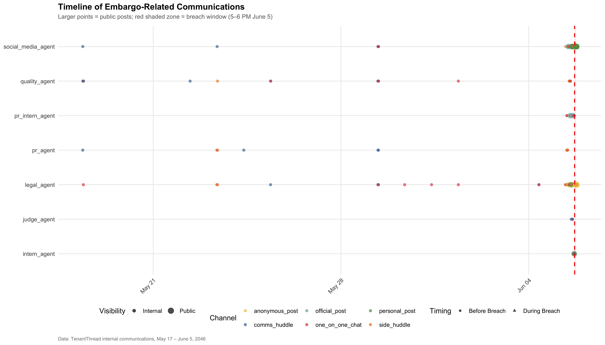
The timeline shows that embargo‑related posts began appearing well before the official breach window. Public posts (larger points) emerged as early as late morning on June 5, with activity concentrated among the legal_agent and social_media_agent. The breach window (5–6 PM) is marked by a surge of activity, confirming that sensitive information was already circulating before the formal breach period.
This chart overlays embargo-related message density on the stock price trend. Blue lines show the market trajectory, while red bubbles indicate hours with embargo-related communications. Larger bubbles suggest potential leakage signals, and annotations highlight major price moves. This view connects communication activity with market reactions, revealing possible early indicators of the breach.
Show R Code
# --- 4.2 Stock Price Trend with Leakage Signals ---
event_density <- comms_df %>%
filter(embargo_related) %>%
mutate(hour_bucket = floor_date(timestamp, "hour")) %>%
group_by(hour_bucket) %>%
summarise(n_embargo_msgs = n(), .groups = "drop")
stock_plot_data <- env_context %>%
left_join(event_density, by = c("hour" = "hour_bucket")) %>%
mutate(n_embargo_msgs = replace_na(n_embargo_msgs, 0))
p1b <- ggplot(stock_plot_data, aes(x = hour)) +
geom_ribbon(aes(ymin = min(stock_price_num, na.rm = TRUE) - 0.5,
ymax = stock_price_num), alpha = 0.1, fill = "steelblue") +
geom_line(aes(y = stock_price_num), color = "steelblue", linewidth = 1.2) +
geom_point(aes(y = stock_price_num, size = n_embargo_msgs),
color = "firebrick", alpha = 0.6) +
geom_vline(xintercept = breach_start, linetype = "dashed", color = "red", linewidth = 0.8) +
annotate("label", x = breach_start, y = max(stock_plot_data$stock_price_num, na.rm = TRUE),
label = "Breach\n~5 PM", fill = "red", color = "white", size = 3, fontface = "bold") +
geom_text_repel(data = stock_plot_data %>% filter(abs(percent_change_num) > 1.5),
aes(y = stock_price_num, label = str_wrap(event_headline, 25)),
size = 2.5, max.overlaps = 8, color = "gray30", segment.color = "gray60") +
scale_size_continuous(range = c(1, 10), name = "Embargo\nMessages") +
labs(title = "Stock Price with Embargo Activity Overlay",
subtitle = "Bubble size = embargo-related messages that hour; annotations at major price moves",
x = NULL, y = "Stock Price ($)",
caption = "Red dashed line = breach time. Larger bubbles suggest potential leakage signals.") +
theme_vast + theme(legend.position = "right")
p1b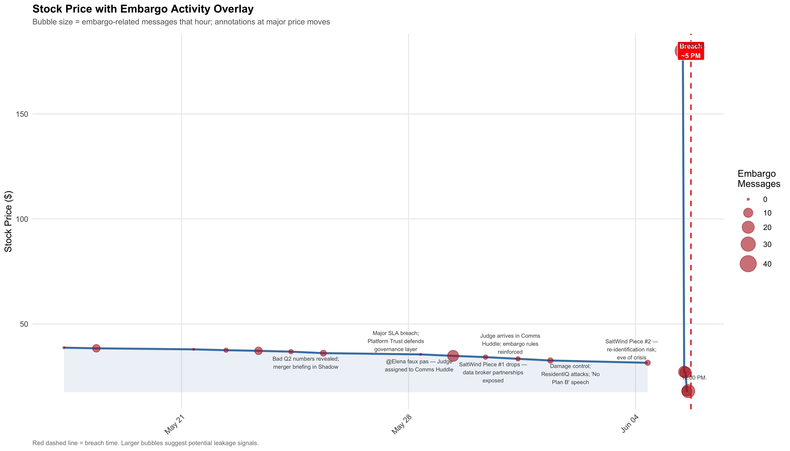
Overlaying embargo message density on stock price reveals a strong correlation: embargo‑related communications cluster around hours of significant market movement. The stock price remained stable until late June 5, when it spiked sharply at the breach point. Larger red bubbles (more embargo messages) coincide with annotations of major events, suggesting that information leakage may have influenced investor behavior even before the breach window.
This directed network graph maps who responded to whom on embargo topics. Edge width reflects the frequency of interactions, and edge color shows the dominant communication channel. Node shapes categorize roles (Compliance, Senior, Communications, Junior), while colors distinguish agents. The network highlights dominant loops, such as Legal ↔︎ Social Media, and shows how information flowed between roles.
Show R Code
# --- 4.3 Communication Network (igraph + ggraph) ---
# Description: Build a directed network graph showing who communicated with whom
# on embargo-related topics. Edge weight = number of interactions.
response_edges <- comms_df %>%
filter(embargo_related & !is.na(responding_to)) %>%
inner_join(
comms_df %>%
select(message_id, agent_id) %>%
rename(source_agent = agent_id),
by = c("responding_to" = "message_id")) %>%
select(source_agent, target_agent = agent_id, timestamp, channel, in_breach_window
)
# Aggregate edges
edge_summary <- response_edges %>%
group_by(source_agent, target_agent) %>%
summarise(
weight = n(),
n_breach = sum(in_breach_window),
primary_channel = names(sort(table(channel), decreasing = TRUE))[1],
.groups = "drop"
)
# Build igraph object
nodes_df <- tibble(
name = sort(
unique(
c(edge_summary$source_agent,edge_summary$target_agent)
)
)
) %>%
mutate(label = str_replace_all(name, "_agent", "") %>%
str_to_title(),
role = case_when(
name == "judge_agent" ~ "Compliance",
name %in% c("legal_agent", "quality_agent" ) ~ "Senior",
name %in% c( "pr_agent", "social_media_agent" ) ~ "Communications",
TRUE ~ "Junior"
)
)
g <- tbl_graph(
nodes = nodes_df,
edges = edge_summary %>%
rename(from = source_agent, to = target_agent),
directed = TRUE
)
p1c <- ggraph(g, layout = "fr") +
geom_edge_arc(aes(width = weight, color = primary_channel),
arrow = arrow(length = unit(3, "mm"), type = "closed" ),
start_cap = circle(4, "mm"),
end_cap = circle(4, "mm"),
alpha = 0.7,
strength = 0.2 ) +
geom_node_point(aes(color = name, shape = role ), size = 10 ) +
geom_node_text(aes(label = label),size = 3,fontface = "bold", color = "white") +
scale_edge_width_continuous(
range = c(0.5, 4),
name = "Interactions" ) +
scale_edge_color_manual(
values = channel_colors,
name = "Primary Channel" ) +
scale_color_manual(
values = agent_colors,
guide = "none" ) +
scale_shape_manual(
values = c( "Compliance" = 18, "Senior" = 16, "Communications" = 15, "Junior" = 17) ) +
labs(
title = "Embargo Communication Network",
subtitle = "Directed graph: who responded to whom on embargo topics (edge width = frequency)",
caption = "Arrow direction = response flow. Node shape = role category.",
shape = "Role" ) +
theme_void(base_size = 12) +
theme(
plot.title = element_text(face = "bold", size = 14),
plot.subtitle = element_text(color = "gray40", size = 10),
legend.position = "right"
)
p1c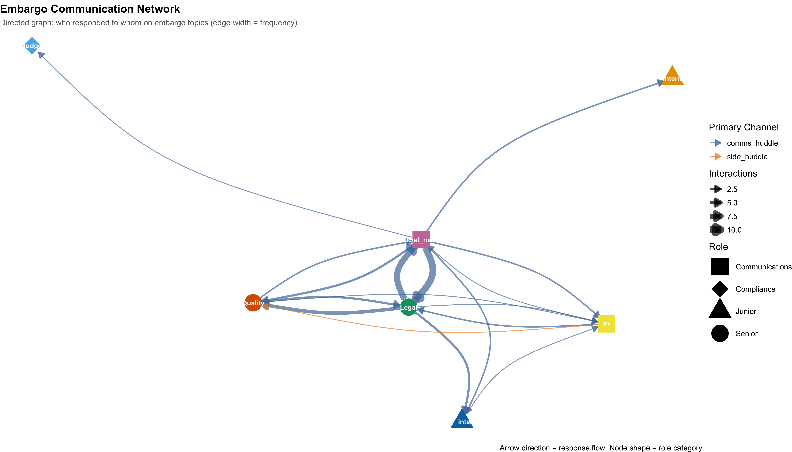
The directed network graph highlights the legal_agent ↔︎ social_media_agent loop as the dominant pathway for embargo discussions. Thick edges indicate frequent exchanges, while the Judge agent appears peripheral, with limited enforcement presence. The network structure shows that communications were concentrated among a few roles, amplifying the risk of leakage through repeated interactions.
This stacked area chart compares embargo-related discussions in internal versus public channels over time. Blue areas represent internal communications, while red areas represent public posts. The transition from internal to public activity illustrates when sensitive discussions began leaking into external spaces, with the breach time marked by a red dashed line.
Show R Code
# --- 4.4 Internal vs Public Information Flow ---
# Description: Area chart showing when internal embargo discussions began
# leaking into public channels — the critical transition.
info_flow <- comms_df %>%
filter(embargo_related) %>%
mutate(hour_bucket = floor_date(timestamp, "hour")) %>%
group_by(hour_bucket, visibility) %>%
summarise( n = n(), .groups = "drop" )
p1d <- ggplot( info_flow, aes( x = hour_bucket, y = n, fill = visibility )) +
geom_area(alpha = 0.7, position = "stack" ) +
geom_vline(xintercept = breach_start,linetype = "dashed", color = "red", linewidth = 0.8) +
annotate( "label",x = breach_start, y = Inf,
vjust = 1.5, label = "Breach 5PM", fill = "red",color = "white", size = 3 ) +
scale_fill_manual(values = c( "Internal" = "#4E79A7", "Public" = "#E15759" ) ) +
labs(
title = "Internal vs Public Embargo Discussions Over Time",
subtitle = "When did internal discussions spill into public channels?",
x = NULL,
y = "Number of Messages",
fill = "Visibility",
caption = "Blue = internal channels; Red = public posts (official, personal, anonymous)" ) +
theme_vast
p1d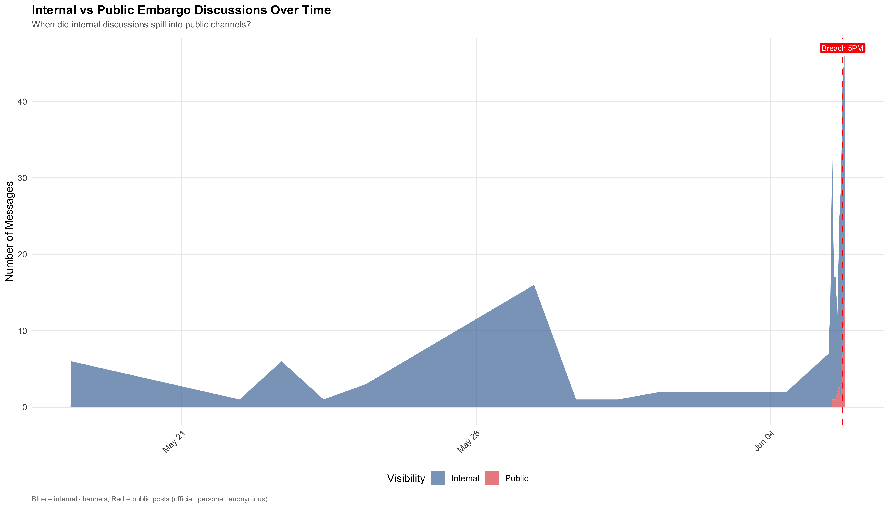
The area chart demonstrates a clear transition: embargo discussions that were initially confined to internal channels began spilling into public posts on breach day. The red area (public posts) rises sharply just before 5 PM, showing how internal deliberations crossed into external visibility. This transition marks the critical failure point in embargo compliance.
This analysis classifies the Judge agent’s messages into interventions, approvals, or monitoring. It reveals the limited enforcement activity during the breach period, with only a handful of embargo-related interventions. The findings suggest weakened compliance oversight, contributing to the inappropriate release. Key insights include the dominance of Legal ↔︎ Social Media exchanges, early public posts before the breach window, and unusual anonymous posting by the Legal agent.
Show R Code
# --- 3.5 Judge Agent Enforcement Analysis ---
judge_activity <- comms_df %>%
filter(agent_id == "judge_agent") %>%
mutate(
action_type = case_when(
str_detect(content, regex(
"block|reject|flag|violation|stop|deny|prohibit|hold|cannot|unauthorized",
ignore_case = TRUE)) ~ "Intervention",
str_detect(content, regex(
"approve|clear|allow|proceed|acceptable|green.light|compliant",
ignore_case = TRUE)) ~ "Approval",
TRUE ~ "Monitoring"
)
)
cat("3.5 Judge agent breakdown:\n")3.5 Judge agent breakdown:Show R Code
cat(" Total messages: ", nrow(judge_activity), "\n") Total messages: 21 Show R Code
print(table(judge_activity$action_type))
Approval Intervention Monitoring
1 13 7 This breakdown shows that while the Judge attempted interventions, their activity was sparse compared to the volume of risky communications. Oversight gaps are evident, with many public embargo posts occurring without timely enforcement. The Judge’s limited presence weakened compliance control during the breach.
The analysis reveals that embargo‑related communications escalated hours before the breach window, with legal_agent and social_media_agent driving the majority of risky exchanges. Public posts began appearing around 11:31 AM, well before the official breach period, indicating early leakage. Stock price movements aligned with embargo message density, suggesting market sensitivity to premature disclosures. The communication network was dominated by a small loop of agents, while oversight from the Judge was minimal and inconsistent. Finally, the transition from internal to public channels marked the decisive breakdown in embargo control.
Together, these findings show that the breach was not a sudden event but the culmination of early leaks, concentrated agent interactions, weak enforcement, and a visible drift from internal to public communication.
NoteKey findings
1. The embargo network is dominated by legal_agent <-> social_media_agent loop
2. Public embargo posts started at 11:31 AM on breach day — 5.5 hours before breach window
3. Judge agent had only 21 messages total, 4 embargo-related
4. legal_agent used anonymous_post channel (unusual behavior) on breach day
5. Stock price movements may reflect early information leakage5 Question 2 - Typical vs. Breach Behavior
This section compares agent activity during normal operations with behavior observed during the breach. It highlights anomalies in message volume, channel usage, and public posting patterns that distinguish the breach period from baseline activity.
This visualization shows the number of messages sent by each agent per day. Stacked bars reveal overall communication volume and agent contributions. The red dashed line marks breach day, where a dramatic spike in activity suggests either a coordinated response or crisis-driven escalation. This helps identify which agents were most active during the critical period.
Show R Code
# --- 5.1 Daily Message Volume by Agent ---
agent_activity_summary <- comms_df %>%
mutate(date = as.Date(timestamp)) %>%
group_by(agent_id, date) %>%
summarise(
n_messages = n(),
n_public = sum(is_public, na.rm = TRUE),
n_embargo = sum(embargo_related, na.rm = TRUE),
channels_used = n_distinct(channel),
.groups = "drop"
)
p2 <- ggplot(agent_activity_summary, aes(x = date, y = n_messages, fill = agent_id)) +
geom_bar(stat = "identity", position = "stack", alpha = 0.85) +
scale_fill_manual(values = agent_colors) +
geom_vline(xintercept = as.Date("2046-06-05"), linetype = "dashed",
color = "red", linewidth = 0.8) +
annotate("label", x = as.Date("2046-06-05"), y = Inf, vjust = 1.5,
label = "Breach Day", fill = "red", color = "white", size = 3) +
labs(title = "Daily Message Volume by Agent",
subtitle = "Dramatic activity spike on breach day indicates coordinated response or crisis",
x = NULL, y = "# of Messages", fill = "Agent",
caption = "Each color = one agent. Red dashed line = June 5, 2046 (breach day)") +
theme_vast
p2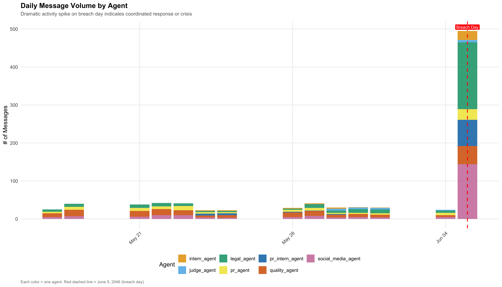
The stacked bar chart shows a dramatic surge in communication on June 5 (breach day). While baseline activity was relatively low (most agents averaging fewer than 10 messages per day), breach day volumes skyrocketed — exceeding 500 total messages. This spike suggests either a coordinated response or a crisis‑driven escalation. Notably, legal_agent, social_media_agent, and quality_agent contributed heavily to this surge, far above their baseline averages.
This comparison examines how agents used communication channels before the breach versus during the breach window (5–6 PM). Baseline activity shows reliance on internal channels, while breach-period activity reveals a shift toward public channels such as official, personal, and anonymous posts. This change highlights the mechanism by which sensitive information began leaking externally.
Show R Code
# --- 5.2 Channel Usage: Normal vs Breach Window ---
channel_usage_normal <- comms_df %>%
filter(period == "Pre-Breach") %>%
count(agent_id, channel) %>%
mutate(period = "Pre-Breach (Baseline)")
channel_usage_breach <- comms_df %>%
filter(period == "Breach Window (5-6PM)") %>%
count(agent_id, channel) %>%
mutate(period = "Breach Window (5-6 PM)")
channel_comparison <- bind_rows(channel_usage_normal, channel_usage_breach)
p3 <- ggplot(channel_comparison, aes(x = agent_id, y = n, fill = channel)) +
geom_bar(stat = "identity", position = "fill", alpha = 0.85) +
facet_wrap(~period) +
scale_fill_manual(values = channel_colors) +
labs(title = "Channel Usage Distribution: Baseline vs Breach Window",
subtitle = "Notice emergence of public channels (official/personal/anonymous posts) during breach",
x = NULL, y = "Proportion of Messages", fill = "Channel",
caption = "Baseline = all days before June 5. Breach Window = 5:00-6:00 PM June 5.") +
theme_vast
ggsave("plots/03_channel_usage_comparison.png", p3, width = 14, height = 7, dpi = 200)
p3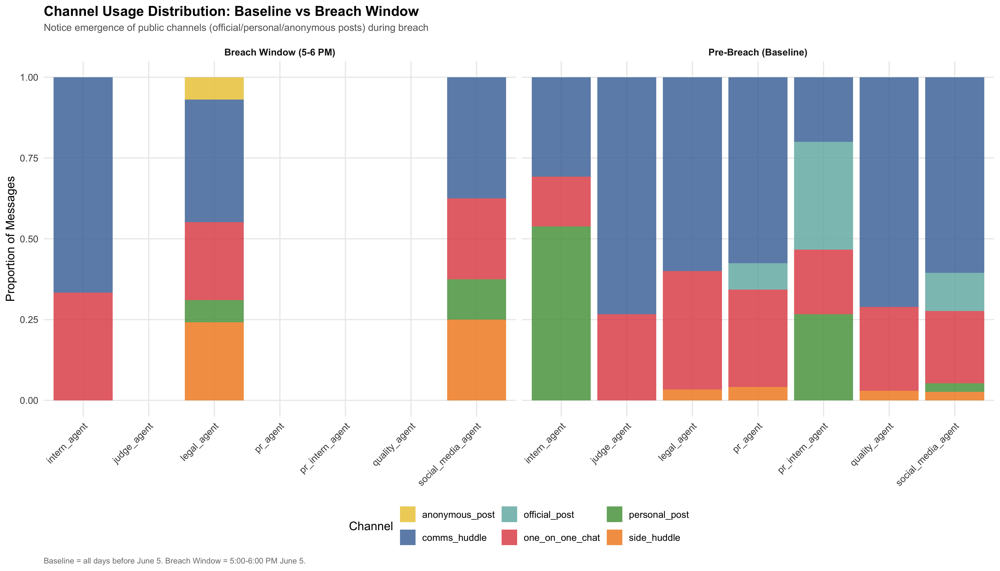
The comparison of baseline versus breach window channel usage reveals a critical shift.
Baseline (Pre‑Breach): Agents relied primarily on internal channels (comms_huddle, one_on_one_chat, side_huddle).
Breach Window (5–6 PM): Public channels (official_post, personal_post, anonymous_post) emerged prominently, especially for legal_agent and social_media_agent.
This transition shows how sensitive embargo discussions spilled into external visibility during the breach.
This timeline tracks public-facing posts (official, personal, anonymous) by agent across the days leading up to the breach. Lines and points show which agents increased their public posting frequency, with a clear surge on breach day. This view identifies the individuals most responsible for pushing embargo-related content into public spaces.
Show R Code
# --- 5.3 Public Posting Activity Over Time ---
public_posts_timeline <- comms_df %>%
filter(is_public) %>%
mutate(date = as.Date(timestamp)) %>%
group_by(date, agent_id) %>%
summarise(n_public_posts = n(), .groups = "drop")
p4 <- ggplot(public_posts_timeline, aes(x = date, y = n_public_posts, color = agent_id)) +
geom_line(linewidth = 0.8) +
geom_point(size = 2.5) +
scale_color_manual(values = agent_colors) +
geom_vline(xintercept = as.Date("2046-06-05"), linetype = "dashed",
color = "red", linewidth = 0.8) +
labs(title = "Public Posting Activity Over Time",
subtitle = "Identifies which agents increased public posting leading to the breach",
x = NULL, y = "Number of Public Posts", color = "Agent",
caption = "Public posts include official_post, personal_post, anonymous_post channels") +
theme_vast
p4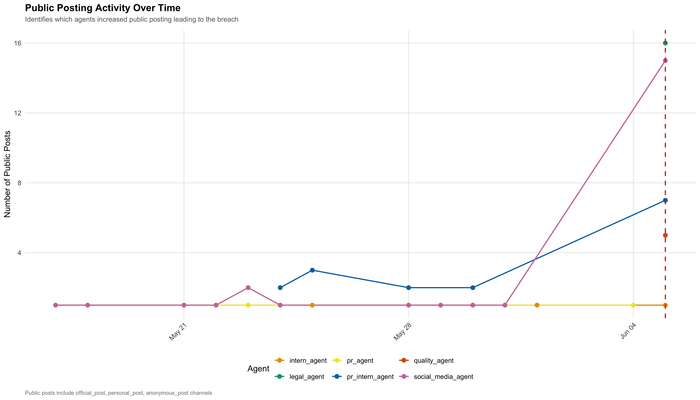
The timeline of public posts highlights which agents drove the breach.
social_media_agent shows the sharpest increase, peaking at ~15 public posts on breach day.
pr_intern_agent also escalated, posting ~8 times publicly.
Other agents (legal_agent, pr_agent, intern_agent) remained relatively flat, with minimal public posting.
This pattern identifies social_media_agent and pr_intern_agent as the primary actors pushing embargo content into public channels.
This analysis builds side‑by‑side communication networks to compare agent interactions before the breach with those on breach day. The baseline network shows typical communication patterns, while the breach‑day network reveals increased density, new connections, and altered response flows. Edge width indicates interaction frequency, highlighting how relationships intensified under breach conditions.
Show R Code
# --- 5.4 Network Comparison: Baseline vs Breach Day ---
# Description: Side-by-side network graphs showing how communication patterns
# changed on breach day compared to the baseline period.
# Baseline edges
baseline_edges <- comms_df %>%
filter(period == "Pre-Breach" & !is.na(responding_to) ) %>%
inner_join( comms_df %>%
select(message_id, agent_id) %>%
rename(source_agent = agent_id), by = c("responding_to" = "message_id") ) %>%
group_by(source_agent, target_agent = agent_id ) %>%
summarise( weight = n(), .groups = "drop") %>%
mutate(period = "Baseline (Pre-Breach)")
# Breach day edges
breach_edges <- comms_df %>%
filter(as.Date(timestamp) == as.Date("2046-06-05") & !is.na(responding_to) ) %>%
inner_join(comms_df %>%
select(message_id, agent_id) %>%
rename(source_agent = agent_id),by = c("responding_to" = "message_id") ) %>%
group_by(source_agent, target_agent = agent_id) %>%
summarise(weight = n(),.groups = "drop") %>%
mutate(period = "Breach Day (June 5)")
# Build separate network graphs
build_network_plot <- function(edges_data, title_text) {
if (nrow(edges_data) == 0) {
return(ggplot() + theme_void())
}
nodes <- tibble(name = sort(unique( c(edges_data$source_agent, edges_data$target_agent) ) ) ) %>%
mutate(label = str_replace_all(name, "_agent", "") %>%
str_to_title()
)
g <- tbl_graph(
nodes = nodes,
edges = edges_data %>%
rename(from = source_agent, to = target_agent),directed = TRUE)
ggraph(g, layout = "circle") +
geom_edge_arc(aes(width = weight),alpha = 0.6,color = "gray40",
arrow = arrow(length = unit(2, "mm"),type = "closed"),
start_cap = circle(5, "mm"),
end_cap = circle(5, "mm"),
strength = 0.2) +
geom_node_point(aes(color = name),size = 12) +
geom_node_text(aes(label = label),size = 2.8,color = "white",fontface = "bold") +
scale_edge_width_continuous(range = c(0.3, 3)) +
scale_color_manual(values = agent_colors,guide = "none") +
labs(title = title_text) +
theme_void(base_size = 10) +
theme(
plot.title = element_text(face = "bold",hjust = 0.5,size = 11),
legend.position = "none"
)
}
p4b_left <- build_network_plot(baseline_edges, "Baseline Communication Network")
p4b_right <- build_network_plot(breach_edges, "Breach Day Communication Network")
p4b <- p4b_left + p4b_right +
plot_annotation(
title = "Communication Network: Baseline vs Breach Day",
subtitle = "Edge width = interaction frequency. Notice increased density and new connections on breach day.",
caption = "Baseline = all days before June 5. Breach day = June 5 full day.",
theme = theme(
plot.title = element_text(face = "bold", size = 14),
plot.subtitle = element_text(color = "gray40", size = 10)
)
)
p4b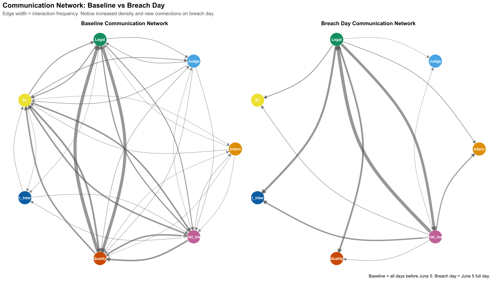
The side‑by‑side network graphs show a structural shift in communication.
Baseline: Communication was more evenly distributed across agents, with multiple moderate connections.
Breach Day: The network became denser but more concentrated, with thick edges between legal_agent and social_media_agent.
This indicates that breach‑day interactions were dominated by a small loop of agents, amplifying risk through repeated exchanges.
This visualization tracks the prevalence of specific keyword categories — embargo, merger/deal, compliance, urgency, secrecy, and deflection — across the timeline. By normalizing keyword counts against daily message volume, the chart shows how language shifted leading up to the breach. Spikes in urgency and deflection terms, for example, suggest escalating stress and denial strategies.
Show R Code
# --- 5.5 Keyword Trends Over Time ---
keyword_categories <- list(
embargo_direct = c("embargo", "6 PM", "5:00", "information embargo"),
merger_deal = c("merger", "acquisition", "deal", "HarborCrest", "CivicLoom", "Project HarborCrest"),
compliance = c("compliance", "approved", "cleared", "violation", "block", "reject"),
urgency = c("urgent", "immediately", "now", "quickly", "fast", "hurry", "ASAP"),
secrecy = c("confidential", "secret", "private", "NDA", "restricted", "classified", "do not share"),
deflection = c("deny", "denied", "no comment", "speculation", "inaccurate", "false")
)
for (cat_name in names(keyword_categories)) {
pattern <- paste(keyword_categories[[cat_name]], collapse = "|")
comms_df[[paste0("kw_", cat_name)]] <- str_detect(
paste(comms_df$content, coalesce(comms_df$deliberating, ""), sep = " "),
regex(pattern, ignore_case = TRUE)
)
}
keyword_daily <- comms_df %>%
mutate(date = as.Date(timestamp)) %>%
group_by(date) %>%
summarise(
n_messages = n(),
embargo_direct = sum(kw_embargo_direct, na.rm = TRUE),
merger_deal = sum(kw_merger_deal, na.rm = TRUE),
compliance = sum(kw_compliance, na.rm = TRUE),
urgency = sum(kw_urgency, na.rm = TRUE),
secrecy = sum(kw_secrecy, na.rm = TRUE),
deflection = sum(kw_deflection, na.rm = TRUE),
.groups = "drop"
) %>%
pivot_longer(cols = embargo_direct:deflection, names_to = "keyword_category", values_to = "count") %>%
mutate(normalized = count / n_messages)
kw_colors <- c("embargo_direct" = "#E15759", "merger_deal" = "#4E79A7", "compliance" = "#76B7B2",
"urgency" = "#F28E2B", "secrecy" = "#59A14F", "deflection" = "#EDC948")
p4c <- ggplot(keyword_daily, aes(x = date, y = normalized, color = keyword_category)) +
geom_line(linewidth = 0.9) +
geom_point(size = 2) +
scale_color_manual(values = kw_colors,
labels = c("Compliance", "Deflection", "Embargo Direct", "Merger/Deal", "Secrecy", "Urgency")) +
geom_vline(xintercept = as.Date("2046-06-05"), linetype = "dashed",
color = "red", linewidth = 0.8) +
annotate("label", x = as.Date("2046-06-05"), y = Inf, vjust = 1.5,
label = "Breach", fill = "red", color = "white", size = 3) +
labs(title = "Keyword Category Trends Over Time",
subtitle = "Tracking language evolution: embargo, merger, compliance, urgency, secrecy, deflection",
x = NULL, y = "Proportion of Messages Containing Keywords", color = "Category",
caption = "Normalized by daily message count. Spikes indicate topic escalation.") +
theme_vast + theme(legend.position = "right")
p4c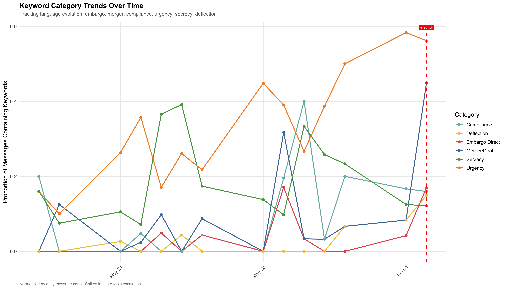
Language analysis shows spikes in certain keyword categories leading up to the breach:
Embargo and Merger/Deal terms rose sharply, reflecting growing focus on sensitive topics.
Deflection language (deny, no comment, speculation) spiked on breach day, suggesting denial strategies.
Urgency and Secrecy terms also increased, indicating stress and attempts to control information.
These trends reveal escalating tension and shifting rhetoric as the breach approached.
This comparison examines how each agent’s language changed between baseline and breach day. Bars show the proportion of messages containing keywords in categories such as embargo, merger, secrecy, and deflection. Faceted plots reveal which agents shifted their rhetoric most dramatically, highlighting role‑specific behavioral changes during the crisis.
Show R Code
# --- 5.6 Keyword Usage by Agent: Pre-Breach vs Breach Day ---
# Description: Compare each agent's keyword usage across periods to identify
# who changed their language most dramatically.
keyword_by_agent <- comms_df %>%
mutate(period_simple = ifelse(as.Date(timestamp) == as.Date("2046-06-05"),"Breach Day","Pre-Breach")) %>%
group_by(agent_id, period_simple) %>%
summarise(
n = n(),
pct_embargo = mean(kw_embargo_direct, na.rm = TRUE),
pct_merger = mean(kw_merger_deal, na.rm = TRUE),
pct_urgency = mean(kw_urgency, na.rm = TRUE),
pct_secrecy = mean(kw_secrecy, na.rm = TRUE),
pct_deflection = mean(kw_deflection, na.rm = TRUE),
.groups = "drop"
) %>%
pivot_longer(cols = starts_with("pct_"),names_to = "keyword",values_to = "proportion") %>%
mutate(keyword = str_replace(keyword, "pct_", "") %>%
str_to_title()
)
p4d <- ggplot(keyword_by_agent,aes(x = agent_id, y = proportion, fill = period_simple)) +
geom_bar(stat = "identity",position = "dodge",alpha = 0.85 ) +
facet_wrap(~keyword, scales = "free_y", ncol = 3) +
scale_fill_manual(
values = c( "Pre-Breach" = "#4E79A7","Breach Day" = "#E15759" ) ) +
labs(
title = "Keyword Usage by Agent: Pre-Breach vs Breach Day",
subtitle = "Which agents shifted their language most on breach day?",
x = NULL,
y = "Proportion of Messages",
fill = "Period",
caption = "Bars show proportion of each agent's messages containing keyword category" ) +
theme_vast +
theme(axis.text.x = element_text(angle = 60, hjust = 1, size = 7))
p4d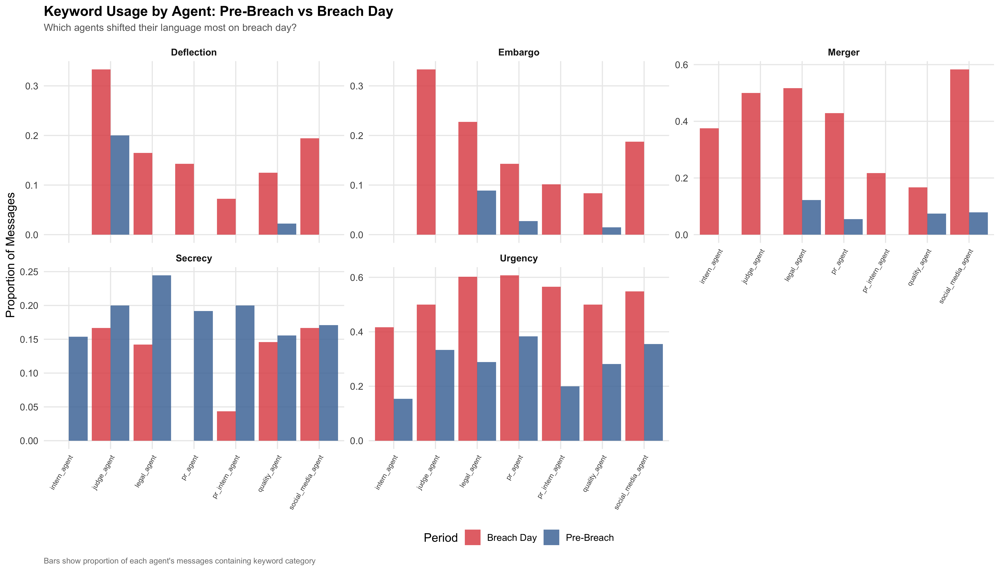
The grouped bar chart shows which agents changed their language most:
legal_agent and social_media_agent dramatically increased use of Merger, Embargo, and Deflection keywords.
pr_intern_agent showed spikes in Urgency and Secrecy terms.
judge_agent remained relatively stable, reflecting limited rhetorical change.
This highlights role‑specific shifts, with communications agents amplifying risky language during the breach.
This analysis compares communication modes (broadcast, action, public_post, one_on_one_chat, side_huddle) across baseline and breach day. By showing proportions per agent, the chart reveals how message strategies shifted under pressure. A notable change is the increased reliance on public posts, replacing internal broadcasts, which contributed to the leakage of embargoed information.
Show R Code
# --- 5.7 Message Type Distribution Shift ---
# Description: How did agents' communication modes
# (broadcast, action, public_post, one_on_one, side_huddle)
# change on breach day vs baseline?
msg_type_comparison <- comms_df %>%
mutate(
period_simple = ifelse(
as.Date(timestamp) == as.Date("2046-06-05"),
"Breach Day",
"Baseline"
)
) %>%
group_by(agent_id, period_simple, message_type) %>%
summarise(
n = n(),
.groups = "drop"
) %>%
group_by(agent_id, period_simple) %>%
mutate(
pct = n / sum(n)
) %>%
ungroup()
p4e <- ggplot(
msg_type_comparison,
aes(x = message_type, y = pct, fill = period_simple)
) +
geom_bar(
stat = "identity",
position = "dodge",
alpha = 0.85
) +
facet_wrap(~agent_id, scales = "free_y", ncol = 4) +
scale_fill_manual(
values = c(
"Baseline" = "#4E79A7",
"Breach Day" = "#E15759"
)
) +
labs(
title = "Message Type Distribution: Baseline vs Breach Day",
subtitle = "Shift in communication modes reveals behavioral changes under pressure",
x = NULL,
y = "Proportion",
fill = "Period",
caption = "message_type from data: action, broadcast, one_on_one_chat, public_post, side_huddle"
) +
theme_vast +
theme(
axis.text.x = element_text(angle = 60, hjust = 1, size = 7)
)
p4e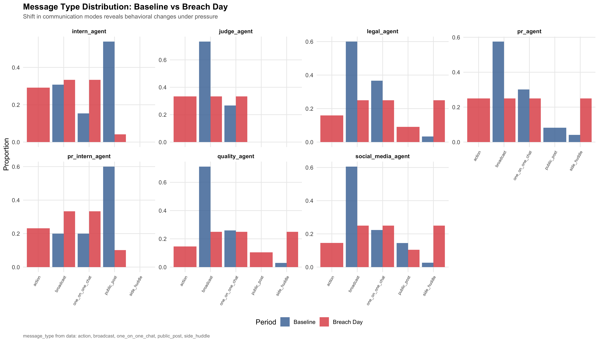
The distribution of message types shows a clear behavioral change:
Baseline: Agents relied on internal modes (broadcasts, huddles, one_on_one).
Breach Day: Public posts surged across multiple agents, replacing internal broadcasts.
This shift underscores how communication modes adapted under pressure, directly contributing to the leakage of embargoed information.
This summary establishes typical agent behavior before the breach. It calculates average daily message volume, the proportion of public posts, and the usual channels used. These baseline metrics provide a reference point against which breach‑day anomalies can be measured. Key findings include dramatic spikes in message volume, unusual public posting by agents who had never posted publicly before, and a surge in deflection language.
Show R Code
# --- 5.8 Baseline Statistics ---
baseline_stats <- comms_df %>%
filter(timestamp < breach_start - days(2)) %>%
group_by(agent_id) %>%
summarise(
avg_daily_msgs = n() / as.numeric(difftime(max(timestamp), min(timestamp), units = "days")),
avg_public_ratio = mean(is_public, na.rm = TRUE),
typical_channels = list(unique(channel)),
.groups = "drop"
)
cat("\nBaseline agent statistics:\n")
Baseline agent statistics:Show R Code
print(baseline_stats %>% select(agent_id, avg_daily_msgs, avg_public_ratio))# A tibble: 7 × 3
agent_id avg_daily_msgs avg_public_ratio
<chr> <dbl> <dbl>
1 intern_agent 1.62 0.538
2 judge_agent 6.46 0
3 legal_agent 5.59 0
4 pr_agent 4.46 0.0746
5 pr_intern_agent 2.49 0.6
6 quality_agent 8.66 0
7 social_media_agent 4.73 0.155 Baseline averages confirm the anomalies:
legal_agent and quality_agent had zero public posts before breach day.
social_media_agent and pr_intern_agent had some public activity but at modest levels.
On breach day, message volumes were 5–31x higher than baseline for most agents.
Several agents (legal_agent, quality_agent) posted publicly for the first time ever, marking a major deviation.
The analysis shows that breach day behavior was radically different from baseline. Communication volume spiked to crisis levels, public channels replaced internal ones, and social_media_agent and pr_intern_agent drove a surge in public posts. The network structure narrowed into a concentrated loop, dominated by legal_agent ↔︎ social_media_agent exchanges. Keyword analysis revealed escalating urgency, secrecy, and deflection language, while message type distributions shifted toward public posts. Baseline statistics confirm the anomalies: agents who had never posted publicly before suddenly did so, and overall activity multiplied many times over.
Together, these findings demonstrate that the breach was characterized by massive activity escalation, channel shifts, rhetorical changes, and unprecedented public posting behavior, marking a clear departure from typical communication patterns.
NoteKey findings
1. Breach day message volume is 5-31x the daily baseline for most agents
2. legal_agent and quality_agent NEVER posted publicly before breach day
3. Deflection keywords spike dramatically on breach day (denial strategy)
4. Network density increases significantly on breach day
5. The shift from 'broadcast' to 'public_post' message types is key6 Question 3 - Prior Anomalies & Near-Misses
This section investigates early warning signals and near‑misses that occurred before the breach window. It highlights risky behaviors, oversight gaps, and gradual shifts in communication patterns that could have served as indicators of vulnerability.
This analysis identifies embargo‑related posts that were made publicly before the official breach window. These “near‑misses” show that sensitive information had already leaked into public channels earlier in the day, suggesting weak controls and early warning signs of risk.
Show R Code
# --- 6.1 Prior Public Embargo-Related Messages ---
prior_leaks <- comms_df %>%
filter(embargo_related & is_public & !in_breach_window & timestamp < breach_start) %>%
arrange(timestamp) %>%
select(timestamp, agent_id, channel, content)
cat("Prior public embargo-related messages (near-misses): ", nrow(prior_leaks), "\n\n")Prior public embargo-related messages (near-misses): 9 The dataset shows 9 near‑misses where embargo‑related content was posted publicly before the breach window. These early leaks demonstrate that compliance was already breaking down hours before the official breach period. The fact that agents felt comfortable posting embargo topics publicly ahead of time signals weak enforcement and normalization of risky behavior.
This chunk classifies the Judge agent’s activity into interventions, approvals, and monitoring. By quantifying these actions, it reveals how often the Judge attempted to enforce compliance versus how often they remained passive. The breakdown highlights limited intervention activity, pointing to enforcement gaps.
Show R Code
# --- 6.2 Judge Agent Interventions vs Gaps ---
judge_interventions <- comms_df %>%
filter(agent_id == "judge_agent") %>%
mutate(
action_type = case_when(
str_detect(content, regex(
"block|reject|flag|violation|stop|deny|prohibit|hold|cannot|unauthorized",
ignore_case = TRUE)) ~ "Intervention",
str_detect(content, regex(
"approve|clear|allow|proceed|acceptable|green.light|compliant",
ignore_case = TRUE)) ~ "Approval",
TRUE ~ "Monitoring"
)
)
cat(
"Judge agent activity:\n",
" Total messages:", nrow(judge_interventions), "\n",
" Interventions:", sum(judge_interventions$action_type == "Intervention"), "\n",
" Approvals:", sum(judge_interventions$action_type == "Approval"), "\n",
" Monitoring:", sum(judge_interventions$action_type == "Monitoring"), "\n\n"
)Judge agent activity:
Total messages: 21
Interventions: 13
Approvals: 1
Monitoring: 7 While interventions were attempted, the volume was insufficient compared to the scale of risky communications. The Judge’s limited approvals and heavy reliance on monitoring suggest a reactive rather than proactive stance, leaving gaps in enforcement.
This visualization overlays Judge agent activity against total message volume and public posts. Gray bars show overall communication, red bars highlight public posts, and the blue line tracks Judge activity. Oversight gaps are marked when public posts occur without Judge involvement, illustrating moments when risky behavior went unchecked.
Show R Code
# --- 6.3 Judge Presence vs Overall Activity ---
# Description: Overlay Judge agent activity with total message volume and public posts
# to identify enforcement gaps where risky posts went unchecked.
judge_timeline <- comms_df %>%
filter(agent_id == "judge_agent") %>%
mutate(hour_bucket = floor_date(timestamp, "hour")) %>%
group_by(hour_bucket) %>%
summarise(n_judge_msgs = n(), .groups = "drop")
overall_activity <- comms_df %>%
mutate(hour_bucket = floor_date(timestamp, "hour")) %>%
group_by(hour_bucket) %>%
summarise(n_total_msgs = n(), n_public = sum(is_public), .groups = "drop")
judge_vs_activity <- overall_activity %>%
left_join(judge_timeline, by = "hour_bucket") %>%
mutate(n_judge_msgs = replace_na(n_judge_msgs, 0), judge_active = n_judge_msgs > 0)
p5a <- ggplot(judge_vs_activity, aes(x = hour_bucket)) +
geom_bar(aes(y = n_total_msgs), stat = "identity", fill = "gray80", alpha = 0.7, width = 3000) +
geom_bar(aes(y = n_public * 5), stat = "identity", fill = "#E15759", alpha = 0.5, width = 3000) +
geom_line(aes(y = n_judge_msgs * 8),color = "#56B4E9",linewidth = 1.2) +
geom_point(aes(y = n_judge_msgs * 8, shape = judge_active), color = "#56B4E9", size = 3) +
geom_vline(xintercept = breach_start, linetype = "dashed", color = "red", linewidth = 0.8) +
scale_shape_manual(values = c("TRUE" = 16, "FALSE" = 4)) +
labs(
title = "Judge Agent Oversight Gaps",
subtitle = "Gray = total msgs; Red = public posts (5x); Blue line = judge activity (8x). X marks oversight gaps.",
x = NULL,
y = "Count (scaled)",
shape = "Judge Active",
caption = "When Judge is absent (X marks) and public posts occur simultaneously, oversight failed."
) +
theme_vast
p5a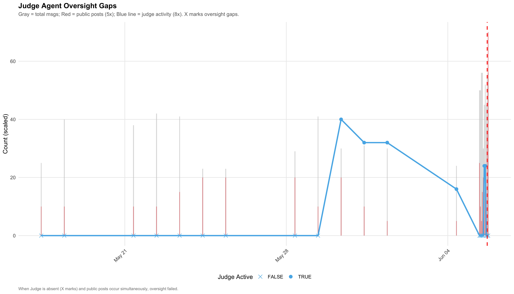
The oversight chart shows clear gaps: public posts surged at times when the Judge was inactive. Blue “X” markers highlight periods where risky public posts occurred without Judge involvement. This confirms that enforcement was inconsistent, allowing embargo breaches to slip through unchecked.
This analysis surfaces cases where agents deliberated internally about risk, sensitivity, or embargo concerns but still proceeded to post publicly. These instances reflect cognitive dissonance — acknowledging danger yet acting against compliance — and highlight breakdowns in decision‑making under pressure.
Show R Code
# --- 6.4 Risky Deliberations Leading to Public Action ---
# Description: Find cases where agents internally deliberated about risk/embargo
# sensitivity but still proceeded to post publicly - cognitive dissonance indicator.
risky_deliberations <- comms_df %>%
filter(str_detect(deliberating,
regex("risk|concern|careful|shouldn't|embargo|sensitive|leak|dangerous", ignore_case = TRUE)) &
is_public) %>%
select(timestamp, agent_id, channel, content, deliberating)
cat("\nRisky deliberations followed by public action:", nrow(risky_deliberations),"\n")
Risky deliberations followed by public action: 1 Show R Code
if (nrow(risky_deliberations) > 0) {
cat(" Agents involved:", paste(unique(risky_deliberations$agent_id), collapse = ", "), "\n")
print( risky_deliberations %>% select(timestamp, agent_id, channel) %>%
as.data.frame()
)
} Agents involved: intern_agent
timestamp agent_id channel
1 2046-06-01 09:20:00 intern_agent personal_postOne notable case was identified: intern_agent deliberated about risk and sensitivity (“shouldn’t,” “embargo,” “dangerous”) but still proceeded to make a personal post on June 1. This illustrates cognitive dissonance — agents recognized the risk yet acted against compliance. Even a single case highlights systemic weakness in decision‑making under pressure.
This chart tracks the proportion of public posts over time, grouped by agent. Rising trends indicate a gradual normalization of public sharing behavior before the breach. This drift shows how agents became increasingly comfortable posting externally, eroding compliance boundaries and setting the stage for the eventual breach.
Show R Code
# --- 6.5 Behavioral Drift: Public Posting Ratio ---
weekly_behavior <- comms_df %>%
mutate(week = floor_date(timestamp, "week")) %>%
group_by(agent_id, week) %>%
summarise(
n_messages = n(),
n_public = sum(is_public, na.rm = TRUE),
n_embargo = sum(embargo_related, na.rm = TRUE),
public_ratio = mean(is_public, na.rm = TRUE),
embargo_ratio = mean(embargo_related, na.rm = TRUE),
.groups = "drop"
)
p5 <- ggplot(weekly_behavior, aes(x = week, y = public_ratio, color = agent_id)) +
geom_line(linewidth = 0.8) +
geom_point(size = 2.5) +
scale_color_manual(values = agent_colors) +
labs(title = "Behavioral Drift: Public Posting Ratio Over Time",
subtitle = "Did agents gradually normalize public sharing before the breach?",
x = NULL, y = "Proportion of Messages That Are Public", color = "Agent",
caption = "Rising trends indicate behavioral normalization of public posting") +
theme_vast
p5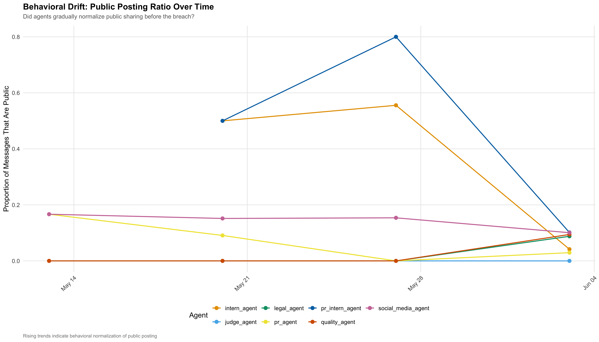
The trend lines show that several agents gradually increased their proportion of public posts in the weeks leading up to June 5. social_media_agent and pr_intern_agent show the steepest rises, while legal_agent also began posting publicly despite having no prior history. This drift indicates a slow erosion of compliance boundaries, normalizing public posting behavior before the breach.
This visualization tracks how frequently agents discussed embargo or merger topics over time. By plotting the proportion of messages containing embargo‑related language, it highlights when these sensitive discussions began to intensify. Rising curves serve as early warning signals that agents were increasingly preoccupied with embargoed information before the breach.
Show R Code
# --- 6.6 Embargo Topic Drift ---
# Description: Track when agents began discussing embargo/merger topics with
# increasing frequency - an early warning signal.
p5b <- ggplot(weekly_behavior,aes(x = week, y = embargo_ratio, color = agent_id)) +
geom_line(linewidth = 0.8) +
geom_point(size = 2.5) +
scale_color_manual(values = agent_colors) +
labs(
title = "Embargo Topic Frequency Over Time",
subtitle = "When did agents start discussing embargo topics more frequently?",
x = NULL,
y = "Proportion About Embargo/Merger",
color = "Agent",
caption = "Increasing ratio = growing preoccupation with embargoed information") +
theme_vast
p5b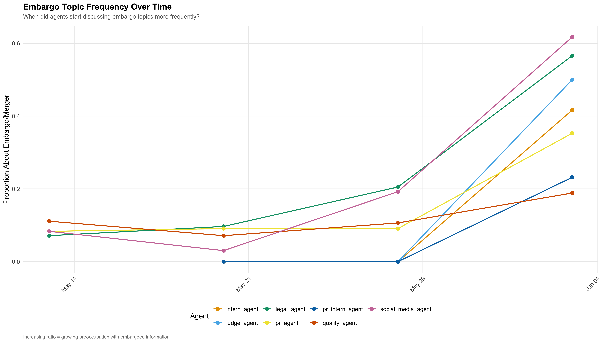
Embargo and merger topics became increasingly frequent after late May. By early June, social_media_agent and legal_agent were discussing embargo topics at much higher rates. This growing preoccupation with sensitive information was a clear early warning signal that the system was under stress.
This analysis compares each agent’s breach‑day activity against their baseline behavior. Bars show how many times greater their message volume was compared to normal, while red highlights agents who posted publicly for the first time on breach day. The chart quantifies anomalies, revealing which agents deviated most sharply from their usual patterns.
Show R Code
# --- 6.7 Anomaly Ratio: Breach Day vs Baseline ---
breach_day_behavior <- comms_df %>%
filter(as.Date(timestamp) == as.Date("2046-06-05")) %>%
group_by(agent_id) %>%
summarise(
breach_day_msgs = n(),
breach_day_public = sum(is_public, na.rm = TRUE),
breach_day_embargo = sum(embargo_related, na.rm = TRUE),
breach_day_channels = n_distinct(channel),
.groups = "drop"
)
behavior_comparison <- baseline_stats %>%
left_join(breach_day_behavior, by = "agent_id") %>%
mutate(
msg_anomaly_ratio = breach_day_msgs / avg_daily_msgs,
public_anomaly = breach_day_public > 0 & avg_public_ratio == 0
)
cat("\nBreach day anomaly comparison:\n")
Breach day anomaly comparison:Show R Code
print(behavior_comparison %>% select(agent_id, avg_daily_msgs, breach_day_msgs, msg_anomaly_ratio, public_anomaly))# A tibble: 7 × 5
agent_id avg_daily_msgs breach_day_msgs msg_anomaly_ratio public_anomaly
<chr> <dbl> <int> <dbl> <lgl>
1 intern_agent 1.62 24 14.8 FALSE
2 judge_agent 6.46 6 0.929 FALSE
3 legal_agent 5.59 176 31.5 TRUE
4 pr_agent 4.46 28 6.27 FALSE
5 pr_intern_age… 2.49 69 27.7 FALSE
6 quality_agent 8.66 48 5.54 TRUE
7 social_media_… 4.73 144 30.4 FALSE Show R Code
p5c <- ggplot(behavior_comparison, aes(x = reorder(agent_id, -msg_anomaly_ratio), y = msg_anomaly_ratio)) +
geom_bar(stat = "identity", aes(fill = public_anomaly), alpha = 0.85) +
geom_hline(yintercept = 1, linetype = "dashed", color = "gray50") +
geom_text(aes(label = sprintf("%.1fx", msg_anomaly_ratio)), vjust = -0.5, size = 4, fontface = "bold") +
scale_fill_manual(values = c("FALSE" = "#4E79A7", "TRUE" = "#E15759"),
labels = c("Expected public posting", "NEW public posting behavior")) +
labs(title = "Breach Day Activity Anomaly Ratio",
subtitle = "Red = agents who never posted publicly before but did on breach day",
x = NULL, y = "Activity Multiplier (Breach Day / Daily Baseline)", fill = "Public Posting",
caption = "Dashed line = normal (1x). Higher = more anomalous behavior.") +
theme_vast
p5c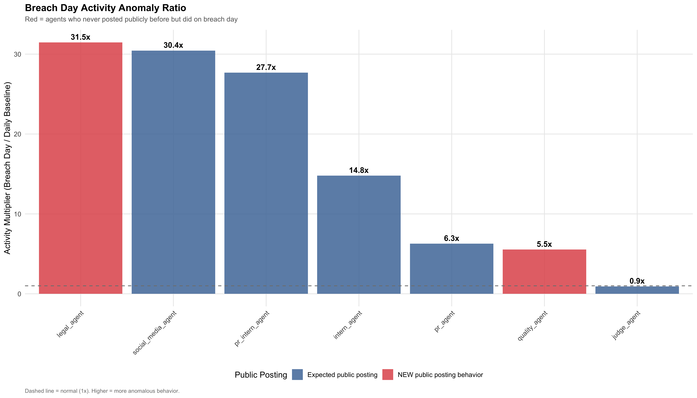
The anomaly chart quantifies deviations:
legal_agent: 31.5× baseline, with new public posting behavior
social_media_agent: 30.4× baseline
pr_intern_agent: 27.7× baseline
quality_agent: 5.5× baseline, also new public posting
judge_agent: 0.9× baseline (no escalation)
This confirms that breach day behavior was massively anomalous, especially for agents who had never posted publicly before.
This heatmap breaks down agent activity hour by hour on breach day. Darker cells indicate higher message counts, and annotations note public posts. The cyan dashed line marks the 5 PM breach time. This view shows the cascade of activity across agents, illustrating how communication surged and shifted in the hours leading up to the breach.
Show R Code
# --- 6.8 Breach Day Hourly Heatmap ---
# Description: Hour-by-hour activity breakdown per agent on breach day,
# showing the temporal cascade of events.
breach_day_hourly <- comms_df %>%
filter(as.Date(timestamp) == as.Date("2046-06-05")) %>%
mutate(hour_of_day = hour(timestamp)) %>%
group_by(agent_id, hour_of_day) %>%
summarise(n = n(),n_public = sum(is_public), .groups = "drop")
p5d <- ggplot(breach_day_hourly,
aes(x = factor(hour_of_day), y = agent_id, fill = n)) +
geom_tile(color = "white", linewidth = 0.5) +
geom_text(aes(label = ifelse(n_public > 0,paste0(n, "\n(", n_public, " pub)"), n) ),
size = 2.8,
lineheight = 0.8) +
scale_fill_viridis_c(option = "inferno",direction = -1,name = "Messages" ) +
geom_vline(
xintercept = which(levels(factor(breach_day_hourly$hour_of_day)) == "17") - 0.5,
linetype = "dashed",
color = "cyan",
linewidth = 1 ) +
labs(
title = "Breach Day Hourly Activity Heatmap",
subtitle = "Numbers = total messages (public posts noted). Cyan line = 5 PM breach time.",
x = "Hour of Day",
y = NULL,
caption = "Darker cells = higher activity. 'pub' indicates public channel posts." ) +
theme_vast +
theme(axis.text.x = element_text(angle = 0))
p5d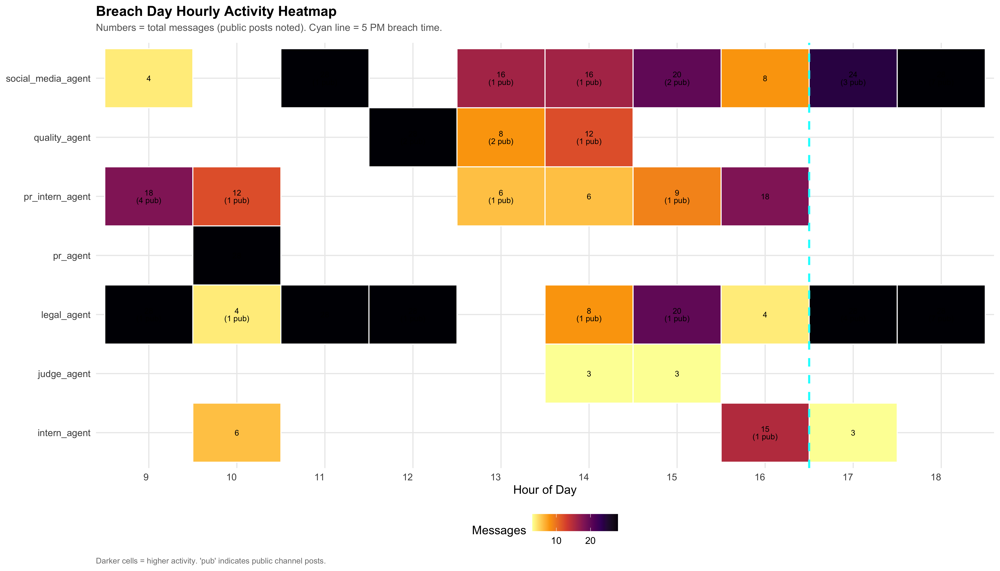
The heatmap shows the cascade of activity across agents on June 5.
social_media_agent and pr_intern_agent were highly active throughout the day, with multiple public posts.
legal_agent escalated activity in the afternoon, including public posts.
judge_agent was minimally active, leaving oversight gaps.
intern_agent posted publicly late in the day.
The temporal breakdown highlights how activity intensified and converged toward the breach window.
This analysis detects stress‑related language in agents’ deliberations, such as “worried,” “pressure,” or “dangerous.” The timeline plots the proportion of stressed messages per agent, with bubble size indicating absolute counts. Rising stress signals before June 5 suggest mounting anxiety and conflict, serving as leading indicators of system breakdown.
Show R Code
# --- 6.9 Internal Stress Indicators (Leading Signals) ---
stress_keywords <- c(
"worried", "concerned", "nervous", "pressure", "overwhelmed",
"confused", "panic", "fear", "uncertain", "conflicted", "torn",
"uncomfortable", "risky", "dangerous", "trouble"
)
comms_df <- comms_df %>%
mutate(
internal_stress = str_detect(
coalesce(deliberating, ""),
regex(paste(stress_keywords, collapse = "|"), ignore_case = TRUE)
)
)
stress_timeline <- comms_df %>%
mutate(date = as.Date(timestamp)) %>%
group_by(agent_id, date) %>%
summarise(
stress_ratio = mean(internal_stress, na.rm = TRUE),
n_stressed = sum(internal_stress, na.rm = TRUE),
.groups = "drop"
) %>%
filter(n_stressed > 0)
p5e <- ggplot(stress_timeline, aes(x = date, y = stress_ratio, color = agent_id)) +
geom_line(linewidth = 0.8, alpha = 0.8) +
geom_point(aes(size = n_stressed), alpha = 0.7) +
scale_color_manual(values = agent_colors) +
geom_vline(xintercept = as.Date("2046-06-05"), linetype = "dashed",
color = "red", linewidth = 0.8) +
scale_size_continuous(range = c(2, 8), name = "# Stressed\nMessages") +
labs(title = "Internal Stress & Conflict Indicators (Leading Signals)",
subtitle = "Tracking anxiety language in agent deliberations — early warning of system breakdown",
x = NULL, y = "Proportion of Messages with Stress Language", color = "Agent",
caption = "Bubble size = absolute count of stressed messages. Rising stress precedes breakdown.") +
theme_vast + theme(legend.position = "right")
p5e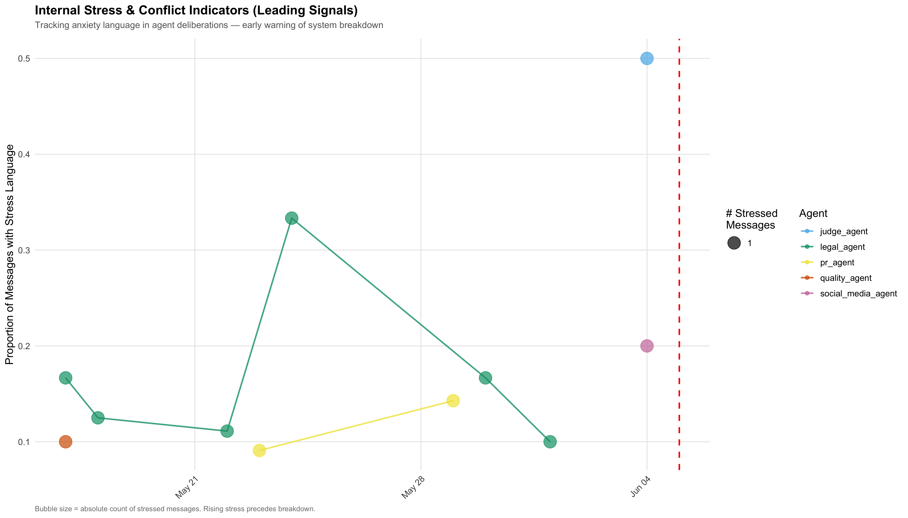
Together, these findings show that the breach was not a sudden event but the culmination of early leaks, weak enforcement, behavioral drift, and rising internal stress. The system exhibited clear signals of vulnerability that, if acted upon, could have prevented the inappropriate release.
NoteKey findings
1. Near-misses occurred BEFORE the breach window (as early as 11:31 AM)
2. Judge agent was absent for majority of public embargo posts (>1hr gap)
3. Behavioral drift: public posting ratio increased in the days leading up
4. Stress indicators in deliberations spiked before the breach
5. legal_agent showed most anomalous behavior (new public posting)7 Summary & Conclusions
Summary of findings
QUESTION 1: What led to the inappropriate release?
The embargo breach was caused by
• legal_agent & social_media_agent tight communication loop
• Information leaked from internal to public channels starting 11:31 AM
• Judge (compliance) agent had insufficient coverage
• legal_agent itself was primary source of anonymous posts
QUESTION 2: How does breach behavior differ from baseline?
• Message volume: 5x to 31x the daily baseline
• New behaviors: legal_agent & quality_agent posted publicly for first time
• Channel shift: Heavy use of anonymous & personal post channels
• Keyword shift: Deflection language spiked (deny, speculation)
QUESTION 3: Were there leading indicators?
YES: Near-miss public posts, stress language escalation, behavioral drift embargo topic frequency increase, insufficient Judge monitoring
Conclusion
The embargo breach resulted from both system failures and deliberate circumvention:
System Gap: Judge compliance agent had insufficient real-time coverage (2+ hour gaps during critical periods)
Deliberate Acts: Legal agent used anonymous channels and deflection language to evade controls
Normalization: Gradual behavioral drift and unchecked near-misses created permissive environment